# HIDE CODE
import re
import os
import sys
import collections
import numpy as np
import pandas as pd
import nibabel as nib
from pathlib import Path
from os.path import join as pjoin
from scipy import stats as sp_stats
from tqdm.notebook import tqdm
import matplotlib.pyplot as plt
import seaborn as sns
sns.set_style('whitegrid')
# GitHub
git_path = pjoin(os.environ['HOME'], 'Dropbox/git/Ca-fMRI/')
sys.path.insert(0, git_path)
from simulation.simulation import *
from utils.plotting import *
from utils.processing import *
from model.configuration import Config
# HIDE CODE
def filter_islands(partition, atlas, node_labels, min_com_size: int = 3):
coms_ctr = collections.Counter(partition.values())
good_com_idxs = zip(*filter(lambda x: x[1] > min_com_size, coms_ctr.most_common()))
good_com_idxs = sorted(tuple(good_com_idxs)[0])
bad_com_idxs = [item for item in set(partition.values()) if item not in good_com_idxs]
comm_dict = collections.defaultdict(list)
for k, v in partition.items():
comm_dict[v].append(k)
comm_dict = dict(sorted(comm_dict.items()))
comm_mat = np.ones(atlas.shape) * -1
for node, com_idx in partition.items():
region_id = node_labels[node]
if com_idx in good_com_idxs:
comm_mat[atlas == region_id] = good_com_idxs.index(com_idx)
else:
comm_mat[atlas == region_id] = np.nan
output = {
'good_com_idxs': good_com_idxs,
'bad_com_idxs': bad_com_idxs,
'comm_dict': comm_dict,
'comm_mat': comm_mat,
}
return output
def plot_louvain_communities(
pearson: dict,
spearman: dict,
atlas: np.ndarray,
contour: np.ndarray,
modularities: dict,
selected_idxs: list,
percentile: int = 20,
min_com_size: int = 3,
figsize=(12, 4.5),
colorbar=False, ):
x0, y0 = tuple(zip(*modularities.items()))
best_idx = np.argmax(y0)
best_res = x0[best_idx]
sns.set_style('white')
plot_idxs = sorted(selected_idxs + [best_idx])
fig, axes = plt.subplots(2, len(plot_idxs), figsize=figsize)
for ii, idx in enumerate(plot_idxs):
# pearson
g = nx.from_numpy_matrix(pearson[percentile])
coms = cdlib_algorithms.louvain(
g_original=g,
weight='weight',
resolution=x0[idx],
randomize=False,
)
partition = convert('community', 'partition', community=coms.communities)
output = filter_islands(partition, atlas, node_labels, min_com_size=min_com_size)
q = nx_comm.modularity(g, communities=coms.communities)
data2plot = np.ma.masked_where(contour, output['comm_mat'])
im = axes[0, ii].imshow(data2plot, cmap='Spectral_r', interpolation='none')
if colorbar:
plt.colorbar(im, ax=axes[0, ii], shrink=0.7)
msg = 'Q = {:.3f}, # com = {:d}'
msg = msg.format(q, len(np.unique(output['comm_mat'][output['comm_mat']>-1])))
axes[0, ii].set_title(msg, y=1.03)
# spearman
g = nx.from_numpy_matrix(spearman[percentile])
coms = cdlib_algorithms.louvain(
g_original=g,
weight='weight',
resolution=x0[idx],
randomize=False,
)
partition = convert('community', 'partition', community=coms.communities)
output = filter_islands(partition, atlas, node_labels, min_com_size=min_com_size)
q = nx_comm.modularity(g, communities=coms.communities)
data2plot = np.ma.masked_where(contour, output['comm_mat'])
im = axes[1, ii].imshow(data2plot, cmap='RdYlBu_r', interpolation='none')
if colorbar:
plt.colorbar(im, ax=axes[1, ii], shrink=0.7)
msg = 'res = {:.3f}\n\nQ = {:.3f}, # com = {:d}'
msg = msg.format(x0[idx], q, len(np.unique(output['comm_mat'][output['comm_mat']>-1])))
axes[1, ii].set_title(msg, y=1.03)
if ii == 0:
msg1 = 'pearson\n(th = {:.2f})\n'
msg1 = msg1.format(np.min(pearson[percentile][pearson[percentile] > 0]))
msg2 = 'spearman\n(th = {:.2f})\n'
msg2 = msg2.format(np.min(spearman[percentile][spearman[percentile] > 0]))
axes[0, ii].set_ylabel(msg1, fontsize=12)
axes[1, ii].set_ylabel(msg2, fontsize=12)
for j in range(2):
axes[j, ii].set_xticks([])
axes[j, ii].set_yticks([])
fig.tight_layout()
plt.show()
return fig, axes
def plot_leiden_communities(
pearson: dict,
spearman: dict,
atlas: np.ndarray,
contour: np.ndarray,
figsize=None,
colorbar=False,):
percentiles = list(spearman.keys())
sns.set_style('white')
figsize = (5.2, 2*len(percentiles)) if figsize is None else figsize
fig, axes = plt.subplots(len(percentiles), 2, figsize=figsize)
for ii, perc in enumerate(sorted(percentiles, reverse=True)):
# pearson
g = nx.from_numpy_matrix(pearson[perc])
coms = cdlib_algorithms.leiden(g, weights='weight')
partition = convert('community', 'partition', community=coms.communities)
output = filter_islands(partition, atlas, node_labels, min_com_size=3)
q = nx_comm.modularity(g, communities=coms.communities)
data2plot = np.ma.masked_where(contour, output['comm_mat'])
im = axes[ii, 0].imshow(data2plot, cmap='Spectral_r', interpolation='none')
if colorbar:
plt.colorbar(im, ax=axes[ii, 0], shrink=0.9)
if ii == 0:
msg = 'Pearson\n\n'
else:
msg = ''
msg += 'Q = {:.3f}, # com = {:d}'
msg = msg.format(q, len(np.unique(output['comm_mat'][output['comm_mat']>-1])))
axes[ii, 0].set_title(msg, fontsize=12, y=1.03)
# spearman
g = nx.from_numpy_matrix(spearman[perc])
coms = cdlib_algorithms.leiden(g, weights='weight')
partition = convert('community', 'partition', community=coms.communities)
output = filter_islands(partition, atlas, node_labels, min_com_size=3)
q = nx_comm.modularity(g, communities=coms.communities)
data2plot = np.ma.masked_where(contour, output['comm_mat'])
im = axes[ii, 1].imshow(data2plot, cmap='RdYlBu_r', interpolation='none')
if colorbar:
plt.colorbar(im, ax=axes[ii, 1], shrink=0.9)
if ii == 0:
msg = 'Spearman\n\n'
else:
msg = ''
msg += 'Q = {:.3f}, # com = {:d}'
msg = msg.format(q, len(np.unique(output['comm_mat'][output['comm_mat']>-1])))
axes[ii, 1].set_title(msg, fontsize=12, y=1.03)
axes[ii, 1].set_ylabel('Using {:d} {:s} \n'.format(perc, '%'), fontsize=12)
for j in range(2):
axes[ii, j].set_xticks([])
axes[ii, j].set_yticks([])
fig.tight_layout()
plt.show()
return fig, axes
from skimage.feature import canny
import functools
def organize_atlas(
organized_data: dict,
include: Union[range, List[int]] = None,
config: Config = None,):
config = Config() if config is None else config
regions = np.unique(organized_data['atlas'])
regions = {i: config.region_labels[i] for i in regions if i > 0}
include = list(regions.keys())[:19] if include is None else include
exclude = [item for item in regions if item not in include]
mapping = {i+1: regions[item].split('(')[0].strip() for i, item in enumerate(include)}
atlas = organized_data['atlas'].copy()
cond = functools.reduce(np.logical_or, [atlas == r for r in exclude])
x = np.ma.masked_where(cond, atlas)
for i, true_i in zip(mapping, include):
x[x == true_i] = i
mapping[0] = 'background'
mapping = dict(sorted(mapping.items()))
contour = atlas.copy().astype(float)
for i, true_i in enumerate(regions):
contour[contour == true_i] = i
contour = canny(contour, sigma=1e-10)
output = {
'regions': regions,
'mapping': mapping,
'atlas': atlas,
'atlas_limited': x,
'contour': contour,
}
return output
SVINET¶
svinet_ws = pjoin(os.environ['HOME'], 'Documents/workspaces/svinet')
cmaps = {
0: 'Blues',
1: 'Reds',
2: 'Greens',
3: 'Greys',
4: 'Purples',
5: 'Oranges',
}
config = Config()
subject = 6
session = 1
num_kmeans_regions = 256
lowcut = 0.002
highcut = 0.9
order = 2
df = pd.DataFrame()
df_bp = pd.DataFrame()
for run in [1, 3, 5, 7]:
load = load_organized_data(
folder='atlas-{:d}_unfiltered_unnormalized'.format(num_kmeans_regions),
config=config,
subject=subject,
session=session,
run=run,
)
ca = {k: v for k, v in load['ca'].items()}
ca_bp = {
k: apply_bandpass(
x=v,
fs=config.ca_fs,
lowcut=lowcut,
highcut=highcut,
order=order, )
for k, v in load['ca'].items()
}
# normalize
mean = np.mean([item.mean() for item in ca.values()])
sd = np.mean([item.std() for item in ca.values()])
ca_n = {k: (v - mean) / sd for k, v in ca.items()}
mean = np.mean([item.mean() for item in ca_bp.values()])
sd = np.mean([item.std() for item in ca_bp.values()])
ca_bp_n = {k: (v - mean) / sd for k, v in ca_bp.items()}
df = pd.concat([df, pd.DataFrame.from_dict(ca_n)])
df_bp = pd.concat([df_bp, pd.DataFrame.from_dict(ca_bp_n)])
node_labels = df.columns.values.tolist()
node_labels = {i: lbl for i, lbl in enumerate(node_labels)}
atls_org = organize_atlas(load)
percentiles = [25, 20, 18, 15, 13, 10]
corrs = get_corrs(df, percentiles=percentiles)
corrs_bp = get_corrs(df_bp, percentiles=percentiles)
graphs = {perc: nx.from_numpy_matrix(a) for perc, a in corrs['pearson'].items()}
graphs_bp = {perc: nx.from_numpy_matrix(a) for perc, a in corrs_bp['pearson'].items()}
Save network¶
perc = 25
post = 'perc-{:d}'.format(perc)
networks = {
'ca_{:s}'.format(post): graphs[perc],
'ca_bp_{:s}'.format(post): graphs_bp[perc],
}
networks.update({
'ca_cfg_{:s}'.format(post): mk_config_model(networks['ca_{:s}'.format(post)], weighted=True),
'ca_cfg_bp_{:s}'.format(post): mk_config_model(networks['ca_bp_{:s}'.format(post)], weighted=True),
})
for name, g in networks.items():
save_dir = pjoin(svinet_ws, name)
os.makedirs(save_dir, exist_ok=True)
save_edgelist(g, name=name, save_dir=save_dir)
Run alg¶
do this in terminal
Load results¶
num_comm = 4
def get_filter_fn(num_comm=4):
keywords = ['k{:d}'.format(num_comm)]
def filter_fn(x):
return all(k in x for k in keywords)
return filter_fn
svinet_results = defaultdict(list)
for name in tqdm(networks):
save_dir = pjoin(svinet_ws, name)
results_list = sorted(next(os.walk(save_dir))[1])
results_list = list(filter(get_filter_fn(num_comm), results_list))
for item in tqdm(results_list, leave=False):
results_dir = pjoin(save_dir, item)
try:
result = load_svinet(results_dir)
except FileNotFoundError:
continue
svinet_results[name].append(result)
svinet_results = dict(svinet_results)
{k: len(v) for k, v in svinet_results.items()}
{'ca_perc-25': 1000, 'ca_bp_perc-25': 1000}
Figure out combining data¶
from time import time
from copy import deepcopy as dc
from sklearn.cluster import KMeans
import sklearnex
sklearnex.patch_sklearn()
Intel(R) oneAPI Data Analytics Library solvers for sklearn enabled: https://intelpython.github.io/daal4py/sklearn.html
canonical_comms = {}
kmeans = {}
svinet_ordered = defaultdict(list)
pbar = tqdm(svinet_results)
for key in pbar:
prototypes = []
for run in svinet_results[key]:
for comm_list in run['community'].values():
proto = np.zeros(load['atlas_kmeans'].shape)
for node in comm_list:
region_id = node_labels[node]
proto[load['atlas_kmeans'] == region_id] = 1
prototypes.append(proto.reshape(1, -1))
prototypes = np.concatenate(prototypes)
start = time()
model = KMeans(
n_clusters=num_comm,
random_state=42,
).fit(prototypes)
end = time()
delta = convert_time(end-start, verbose=False)
pbar.set_description(delta)
kmeans[key] = model
canonical_comms[key] = model.cluster_centers_
for run in tqdm(svinet_results[key], leave=False):
_comms = []
for comm_idx, comm_list in run['community'].items():
proto = np.zeros(load['atlas_kmeans'].shape)
for node in comm_list:
region_id = node_labels[node]
proto[load['atlas_kmeans'] == region_id] = 1
_comms.append(proto.reshape(1, -1))
canonical_idxs = model.predict(np.concatenate(_comms))
if len(np.unique(canonical_idxs)) != num_comm:
continue
comm_ordered = {canonical_idxs[i]: comm_list for i, comm_list in run['community'].items()}
result_ordered = {
'community': dict(sorted(comm_ordered.items())),
'membership': {n: mem_vec[canonical_idxs] for n, mem_vec in run['membership'].items()},
'partition': {n: canonical_idxs[i] for n, i in run['partition'].items()},
}
svinet_ordered[key].append(result_ordered)
svinet_ordered = dict(svinet_ordered)
{k: len(v) for k, v in svinet_ordered.items()}
{'ca_perc-25': 910, 'ca_bp_perc-25': 836}
sns.set_style('white')
nrows, ncols = len(canonical_comms), num_comm
fig, axes = plt.subplots(nrows, ncols, figsize=(13, 3.2 * nrows))
for i, key in enumerate(canonical_comms):
for j in range(num_comm):
c = canonical_comms[key][j].reshape(load['atlas'].shape)
axes[i, j].imshow(np.ma.masked_where(~load['mask'], c), interpolation='none')
axes[i, j].set_xticks([])
axes[i, j].set_yticks([])
if j == 0:
axes[i, j].set_ylabel(key + '\n', fontsize=17)
fig.tight_layout()
fig.savefig('svinet_cannonical_perc-{:d}.pdf'.format(perc), dpi=300, bbox_inches='tight')
plt.show()
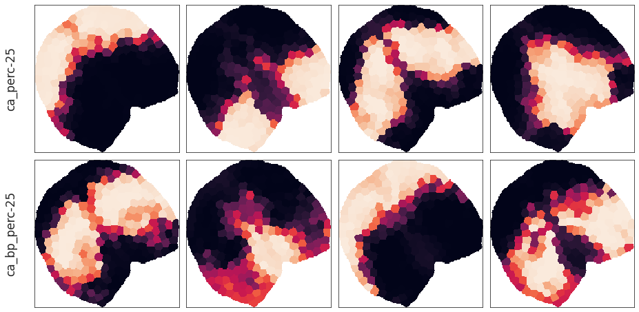
th = 0.3
sns.set_style('white')
nrows, ncols = len(canonical_comms), num_comm
fig, axes = plt.subplots(nrows, ncols, figsize=(13, 2.5 * nrows))
for i, key in enumerate(canonical_comms):
for j in range(num_comm):
c = dc(canonical_comms[key][j].reshape(load['atlas'].shape))
c[c < th] = 0.
c = np.ma.masked_where(~load['mask'], c)
im = axes[i, j].imshow(c, interpolation='none')
plt.colorbar(im, ax=axes[i, j])
axes[i, j].set_xticks([])
axes[i, j].set_yticks([])
axes[i, j].set_title('{:.4f} - {:.4f}'.format(c.min(), c.max()))
if j == 0:
axes[i, j].set_ylabel(key + '\n', fontsize=17)
fig.tight_layout()
# fig.savefig('svinet_cannonical_perc-{:d}.pdf'.format(perc), dpi=300, bbox_inches='tight')
plt.show()
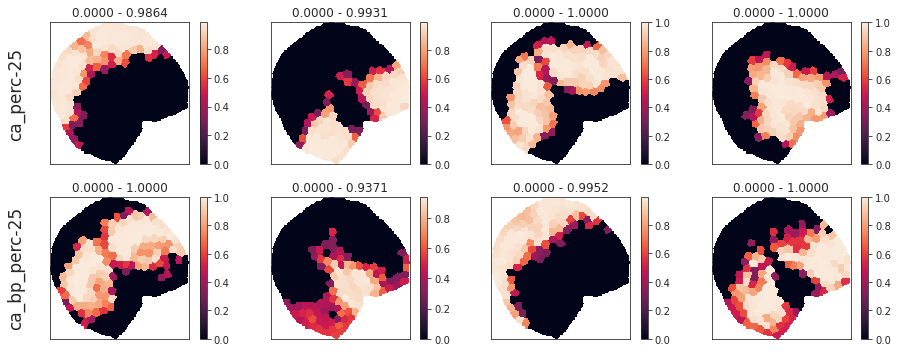
name = 'ca_perc-25'
j = 0
c = dc(canonical_comms[key][j].reshape(load['atlas'].shape))
c[c < th] = 0.
c[~load['mask']] = -1
plt.imshow(c)
<matplotlib.image.AxesImage at 0x7f5e88549eb0>
x = c.copy()
sns.histplot(x[x>0])
<AxesSubplot:ylabel='Count'>
bins = np.linspace(0, 1, 11)
bins
array([0. , 0.1, 0.2, 0.3, 0.4, 0.5, 0.6, 0.7, 0.8, 0.9, 1. ])
name = 'ca_perc-25'
th_all = []
for run_idx, run in enumerate(svinet_ordered[name]):
nodes, mem_vecs = zip(*run['membership'].items())
pi = np.concatenate([v.reshape(-1, 1) for v in mem_vecs], axis=1)
th = collections.Counter(pi.flatten()).most_common()[0][0] * 1.5
th_all.append(th)
collections.Counter(th_all)
Counter({0.003: 910})
th = 0.003
name = 'ca_perc-25'
dict_list = []
dict_list_cut = []
for run_idx, run in tqdm(enumerate(svinet_ordered[name])):
nodes, mem_vecs = zip(*run['membership'].items())
pi = np.concatenate([v.reshape(-1, 1) for v in mem_vecs], axis=1)
pi[pi < th] = 0
for comm_idx in range(num_comm):
mem_vec = pi[comm_idx]
# save data
data_dict = {
'name': [name] * len(nodes),
'OC_idx': [comm_idx] * len(nodes),
'run_idx': [run_idx] * len(nodes),
'node': nodes,
'pi': mem_vec,
}
dict_list.append(data_dict)
# quantize
pi_cut = pd.cut(mem_vec[mem_vec > 0], bins).value_counts()
intervals = pi_cut.index.tolist()
counts = pi_cut.values.tolist()
percent = [x/sum(counts) * 100 for x in counts]
data_dict = {
'name': [name] * len(pi_cut),
'OC_idx': [comm_idx] * len(pi_cut),
'run_idx': [run_idx] * len(pi_cut),
'interval': intervals,
'count': counts,
'percent': percent,
}
dict_list_cut.append(data_dict)
df_memship = pd.DataFrame.from_dict(merge_dicts(dict_list))
df_memship_cut = pd.DataFrame.from_dict(merge_dicts(dict_list_cut))
df_memship
| name | OC_idx | run_idx | node | pi | |
|---|---|---|---|---|---|
| 0 | ca_perc-25 | 0 | 0 | 0 | 0.0 |
| 1 | ca_perc-25 | 0 | 0 | 1 | 0.0 |
| 2 | ca_perc-25 | 0 | 0 | 2 | 0.0 |
| 3 | ca_perc-25 | 0 | 0 | 3 | 0.0 |
| 4 | ca_perc-25 | 0 | 0 | 4 | 0.0 |
| ... | ... | ... | ... | ... | ... |
| 931835 | ca_perc-25 | 3 | 909 | 251 | 0.0 |
| 931836 | ca_perc-25 | 3 | 909 | 252 | 0.0 |
| 931837 | ca_perc-25 | 3 | 909 | 253 | 0.0 |
| 931838 | ca_perc-25 | 3 | 909 | 254 | 0.0 |
| 931839 | ca_perc-25 | 3 | 909 | 255 | 0.0 |
931840 rows × 5 columns
df_memship_cut
| name | OC_idx | run_idx | interval | count | percent | |
|---|---|---|---|---|---|---|
| 0 | ca_perc-25 | 0 | 0 | (0.0, 0.1] | 8 | 6.060606 |
| 1 | ca_perc-25 | 0 | 0 | (0.1, 0.2] | 1 | 0.757576 |
| 2 | ca_perc-25 | 0 | 0 | (0.2, 0.3] | 3 | 2.272727 |
| 3 | ca_perc-25 | 0 | 0 | (0.3, 0.4] | 11 | 8.333333 |
| 4 | ca_perc-25 | 0 | 0 | (0.4, 0.5] | 11 | 8.333333 |
| ... | ... | ... | ... | ... | ... | ... |
| 36395 | ca_perc-25 | 3 | 909 | (0.5, 0.6] | 7 | 6.930693 |
| 36396 | ca_perc-25 | 3 | 909 | (0.6, 0.7] | 2 | 1.980198 |
| 36397 | ca_perc-25 | 3 | 909 | (0.7, 0.8] | 0 | 0.000000 |
| 36398 | ca_perc-25 | 3 | 909 | (0.8, 0.9] | 1 | 0.990099 |
| 36399 | ca_perc-25 | 3 | 909 | (0.9, 1.0] | 27 | 26.732673 |
36400 rows × 6 columns
xticklabels = [np.round(x, decimals=1) for x in bins]
xticks = np.arange(-0.5, len(xticklabels) - 0.5)
cmap = 'turbo'
palette = sns.color_palette(cmap, n_colors=len(bins))
palette
sns.set_style('white')
nrows, ncols = 2, 2
fig, axes = plt.subplots(nrows, ncols, figsize=(12, 8), sharex='all', sharey='all')
for comm_idx in range(num_comm):
i, j = comm_idx//ncols, comm_idx%ncols
selected_df = df_memship_cut.loc[df_memship_cut.OC_idx == comm_idx]
# plot
sns.boxplot(
data=selected_df,
x='interval',
y='percent',
saturation=0.7,
palette=palette,
ax=axes[i, j],
)
# ticks
axes[i, j].set_xticks(xticks)
axes[i, j].set_xticklabels(xticklabels)
axes[i, j].grid()
# labels
axes[i, j].set_title('OC{:d}'.format(comm_idx), fontsize=15)
if i == nrows - 1:
axes[i, j].set_xlabel('Membership value (interval)', fontsize=15)
else:
axes[i, j].set_xlabel('')
if j == 0:
axes[i, j].set_ylabel('Percentage', fontsize=15)
else:
axes[i, j].set_ylabel('')
fig.tight_layout()
plt.show()
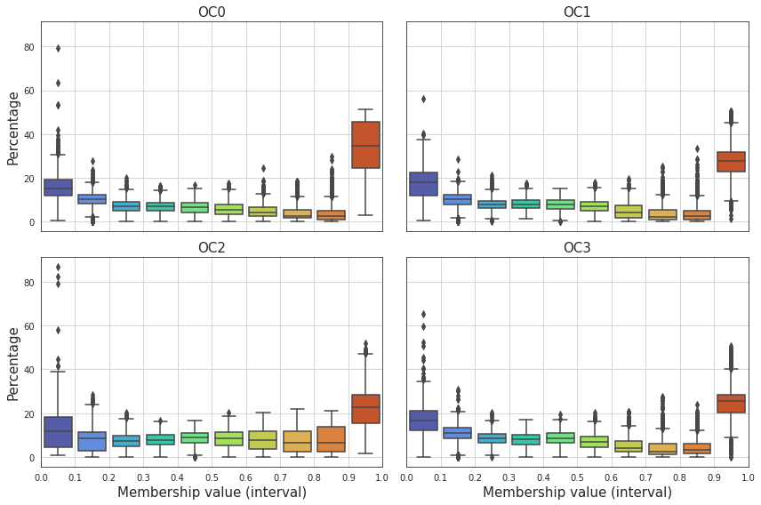
sns.set_style('white')
nrows, ncols = 2, 2
fig, axes = plt.subplots(nrows, ncols, figsize=(12, 10), sharex='all', sharey='all')
for comm_idx in range(num_comm):
i, j = comm_idx//ncols, comm_idx%ncols
selected_df = df_memship_cut.loc[df_memship_cut.OC_idx == comm_idx]
# plot
sns.barplot(
data=selected_df,
x='interval',
y='percent',
saturation=0.7,
estimator=np.mean,
ci=95,
palette=palette,
ax=axes[i, j],
)
# ticks
axes[i, j].set_xticks(xticks)
axes[i, j].set_xticklabels(xticklabels)
axes[i, j].grid()
# labels
axes[i, j].set_title('OC{:d}'.format(comm_idx), fontsize=15)
if i == nrows - 1:
axes[i, j].set_xlabel('Membership value (interval)', fontsize=15)
else:
axes[i, j].set_xlabel('')
if j == 0:
axes[i, j].set_ylabel('Percentage', fontsize=15)
else:
axes[i, j].set_ylabel('')
fig.tight_layout()
plt.show()
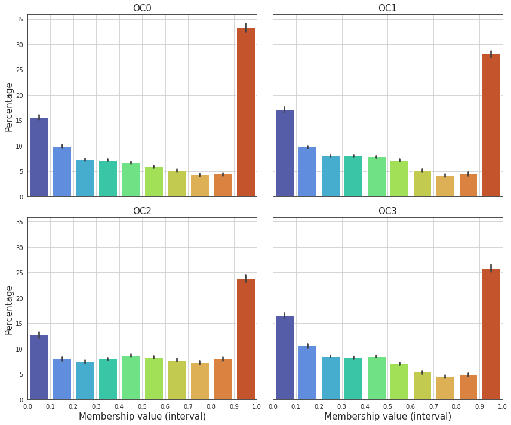
model = kmeans[name]
from sklearn.metrics.pairwise import cosine_similarity
score1 = []
score2 = []
for run_idx, run in enumerate(svinet_results[key]):
_comms = []
for comm_idx, comm_list in run['community'].items():
proto = np.zeros(load['atlas_kmeans'].shape)
for node in comm_list:
region_id = node_labels[node]
proto[load['atlas_kmeans'] == region_id] = 1
_comms.append(proto.reshape(1, -1))
_comms = np.concatenate(_comms)
canonical_idxs = model.predict(_comms)
score1.append(model.score(_comms))
cos_sim = cosine_similarity(model.cluster_centers_, _comms[canonical_idxs])
score2.append(np.diag(cos_sim).mean())
score1 = np.array(score1)
score2 = np.array(score2)
plt.scatter(score2, score1)
<matplotlib.collections.PathCollection at 0x7f5e5bc91fa0>
2500
2500
best_runs = np.argsort(score2)[::-1][:20]
best_runs
array([728, 427, 682, 435, 417, 691, 817, 721, 606, 1, 167, 253, 645,
459, 252, 797, 732, 412, 231, 532])
plt.scatter(score2, score1)
plt.scatter(score2[best_runs], score1[best_runs])
<matplotlib.collections.PathCollection at 0x7f5e88302670>
pi_avg = []
for comm_idx in range(num_comm):
selected_df = df_memship.loc[df_memship.OC_idx == comm_idx]
selected_df = selected_df.groupby('node').mean()
pi_avg.append(selected_df.pi.values.reshape(1, -1))
pi_avg = np.concatenate(pi_avg)
pi_avg.shape
(4, 256)
plt.imshow(pi_avg, aspect=20, vmin=0, vmax=1, cmap='turbo')
<matplotlib.image.AxesImage at 0x7f5e5af08ee0>
selected_df
| OC_idx | run_idx | pi | |
|---|---|---|---|
| node | |||
| 0 | 3.0 | 454.5 | 0.162748 |
| 1 | 3.0 | 454.5 | 0.162552 |
| 2 | 3.0 | 454.5 | 0.162093 |
| 3 | 3.0 | 454.5 | 0.163819 |
| 4 | 3.0 | 454.5 | 0.162076 |
| ... | ... | ... | ... |
| 251 | 3.0 | 454.5 | 0.148421 |
| 252 | 3.0 | 454.5 | 0.149891 |
| 253 | 3.0 | 454.5 | 0.157955 |
| 254 | 3.0 | 454.5 | 0.152469 |
| 255 | 3.0 | 454.5 | 0.160489 |
256 rows × 3 columns
for comm_idx in range(num_comm):
plt.plot(sorted(pi_avg[comm_idx]), label=comm_idx, lw=2)
plt.legend()
plt.grid()
plt.show()
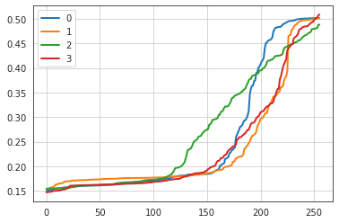
pi_avg = []
for comm_idx in range(num_comm):
selected_df = df_memship.loc[
(df_memship.OC_idx == comm_idx) &
(df_memship.run_idx.isin(best_runs))
]
selected_df = selected_df.groupby('node').mean()
pi_avg.append(selected_df.pi.values.reshape(1, -1))
pi_avg = np.concatenate(pi_avg)
pi_avg /= pi_avg.sum(0, keepdims=True)
pi_avg.shape
(4, 256)
plt.imshow(pi_avg, aspect=20, vmin=0, vmax=1, cmap='turbo')
<matplotlib.image.AxesImage at 0x7f5e593e00d0>
for comm_idx in range(num_comm):
plt.plot(sorted(pi_avg[comm_idx]), label=comm_idx, lw=2)
plt.legend()
plt.grid()
plt.show()
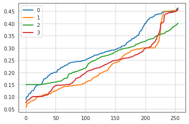
comm_idx = 2
node = 72
selected_df = df_memship.loc[
(df_memship.OC_idx == comm_idx) &
(df_memship.run_idx.isin(best_runs)) &
(df_memship.node == node)
]
selected_df = reset_df(selected_df)
_ = plt.hist(selected_df.pi.values)
plt.show()
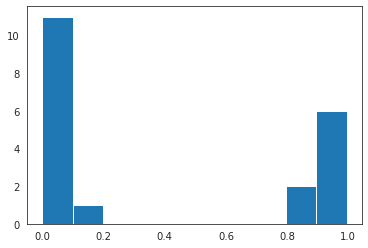
name = 'ca_perc-25'
selected_runs = best_runs
sns.set_style('white')
nrows, ncols = len(selected_runs), num_comm + 1
fig, axes = plt.subplots(nrows, ncols, figsize=(13, 2.8 * nrows))
axes = axes.reshape((nrows, ncols))
for comm_idx in range(num_comm):
for i, run_idx in enumerate(selected_runs):
cmap = cmaps[comm_idx]
comm_list = svinet_ordered[name][run_idx]['community'][comm_idx]
x = np.ones(load['atlas_kmeans'].shape) * -1
y = np.ones(load['atlas_kmeans'].shape) * -1
x[load['mask']] = 0.
for node in comm_list:
region_id = node_labels[node]
x[load['atlas_kmeans'] == region_id] = 2
y[load['atlas_kmeans'] == region_id] = 2
# x[load['atlas_kmeans'] == 72] = 3
data2plt = np.ma.masked_where(atls_org['contour'], x)
axes[i, comm_idx].imshow(data2plt, cmap=cmap, interpolation='none', vmin=-1, vmax=2.5)
axes[i, comm_idx].set_xticks([])
axes[i, comm_idx].set_yticks([])
data2plt = np.ma.masked_where(atls_org['contour'], y)
axes[i, -1].imshow(data2plt, cmap=cmap, interpolation='none', alpha=0.3)
axes[i, -1].set_xticks([])
axes[i, -1].set_yticks([])
if i == 0:
axes[i, comm_idx].set_title('OC_{:d}'.format(comm_idx), fontsize=16, y=1.02)
axes[i, -1].set_title('All superimposed', fontsize=15, y=1.03)
if comm_idx == 0:
axes[i, comm_idx].set_ylabel('{:s}\nrun # {:d}'.format(name, run_idx), fontsize=14)
fig.tight_layout()
plt.show()
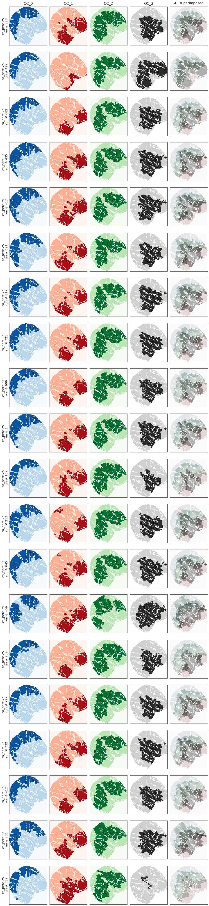
pi = {}
for run_idx in best_runs:
_pi = []
for comm_idx in range(num_comm):
selected_df = df_memship.loc[
(df_memship.OC_idx == comm_idx) &
(df_memship.run_idx == run_idx)
]
_pi.append(selected_df.pi.values.reshape(1, -1))
_pi = np.concatenate(_pi)
_pi /= _pi.sum(0, keepdims=True)
pi[run_idx] = _pi
pi.keys()
dict_keys([728, 427, 682, 435, 417, 691, 817, 721, 606, 1, 167, 253, 645, 459, 252, 797, 732, 412, 231, 532])
sns.set_style('white')
selected_runs = best_runs[:2]
nrows, ncols = len(selected_runs), num_comm
fig, axes = plt.subplots(nrows, ncols, figsize=(13.5, 3.3*nrows))
axes = axes.reshape(nrows, ncols)
for comm_idx in range(num_comm):
for i, run_idx in enumerate(selected_runs):
x = load['ref']
cond = functools.reduce(np.logical_or, [~load['mask']])
data2plt = np.ma.masked_where(cond, x)
axes[i, comm_idx].imshow(data2plt, cmap='Greys_r', interpolation='none', alpha=1.0)
x = np.zeros(load['atlas_kmeans'].shape)
for node in range(pi_avg.shape[1]):
region_id = node_labels[node]
x[load['atlas_kmeans'] == region_id] = pi[run_idx][comm_idx, node]
cond = functools.reduce(np.logical_or, [~load['mask'], x == 0])
data2plt = np.ma.masked_where(cond, x)
im = axes[i, comm_idx].imshow(data2plt, cmap='turbo', interpolation='none')
# plt.colorbar(mappable=im, ax=axes[i, j], aspect=40, shrink=0.5)
list(map(lambda x: x.set_visible(False), axes[i, comm_idx].spines.values()))
axes[i, comm_idx].set_xticks([])
axes[i, comm_idx].set_yticks([])
# if i == 0:
# axes[i, j].set_title('{:s}'.format(lbl), fontsize=14, y=1.1)
# if j == 0:
# axes[0, j].set_ylabel('real graph\n', fontsize=13)
# axes[1, j].set_ylabel('configuration model\n', fontsize=13)
# msg = 'Node centralities, top row: real graph, bottom row: configuration model'
# fig.suptitle(msg, fontsize=15, y=0.98)
# fig.tight_layout()
pos0 = axes[0, -1].get_position()
pos1 = axes[-1, -1].get_position()
rect = [
pos1.x0 + 1.3 * pos1.width, # left
pos1.y0, # bottom
pos1.width / 17, # width
pos0.y0 - pos1.y0 + pos1.height, # height
]
cax = fig.add_axes(rect)
fig.colorbar(cm.ScalarMappable(cmap='turbo'), cax=cax, orientation="vertical")
fig.savefig('memships_cortex_perc{:d}_OC{:d}.pdf'.format(perc, num_comm), dpi=300, bbox_inches='tight')
plt.show()
TODO: write function that converts community list —> community_cortex (4 viz)¶
Old stuff below¶
num_comm = 4
mapping = {i: i for i in range(num_comm)}
sns.set_style('white')
fig, axes = plt.subplots(2, num_comm + 1, figsize=(13.5, 5))
svinet = svinet_results['ca_perc-25'][554]
svinet_bp = svinet_results['ca_bp_perc-25'][168]
for comm_idx in range(num_comm):
for i in range(2):
cmap = cmaps[comm_idx]
comm_list = svinet['community'][comm_idx] if i == 0 else svinet_bp['community'][mapping[comm_idx]]
x = np.ones(load['atlas_kmeans'].shape) * -1
y = np.ones(load['atlas_kmeans'].shape) * -1
x[load['mask']] = 0.
for node in comm_list:
region_id = node_labels[node]
x[load['atlas_kmeans'] == region_id] = 2
y[load['atlas_kmeans'] == region_id] = 2
data2plt = np.ma.masked_where(atls_org['contour'], x)
axes[i, comm_idx].imshow(data2plt, cmap=cmap, interpolation='none')
axes[i, comm_idx].set_xticks([])
axes[i, comm_idx].set_yticks([])
data2plt = np.ma.masked_where(atls_org['contour'], y)
axes[i, -1].imshow(data2plt, cmap=cmap, interpolation='none', alpha=0.3)
axes[i, -1].set_xticks([])
axes[i, -1].set_yticks([])
if i == 0:
axes[i, comm_idx].set_title('OC_{:d}'.format(comm_idx), fontsize=15, y=1.02)
axes[i, -1].set_title('All superimposed', fontsize=15, y=1.03)
if comm_idx == 0:
axes[0, comm_idx].set_ylabel('$Ca^{2+}$', fontsize=17)
axes[1, comm_idx].set_ylabel('$CA^{2+}$ (bp)', fontsize=17)
fig.tight_layout()
plt.show()
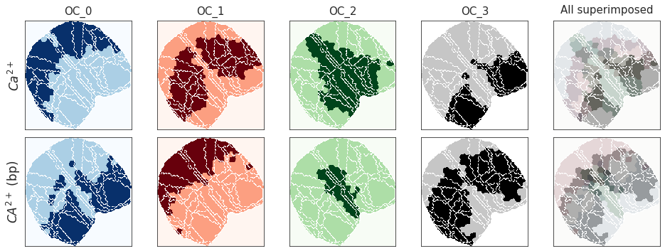
mapping = {
0: 1,
1: 3,
2: 2,
3: 0,
# 4: 3,
}
sns.set_style('white')
fig, axes = plt.subplots(2, num_comm + 1, figsize=(13.5, 6))
for comm_idx in range(num_comm):
for i in range(2):
cmap = cmaps[comm_idx]
comm_list = svinet['community'][comm_idx] if i == 0 else svinet_bp['community'][mapping[comm_idx]]
x = np.ones(load['atlas_kmeans'].shape) * -1
y = np.ones(load['atlas_kmeans'].shape) * -1
x[load['mask']] = 0.
for node in comm_list:
region_id = node_labels[node]
x[load['atlas_kmeans'] == region_id] = 2
y[load['atlas_kmeans'] == region_id] = 2
data2plt = np.ma.masked_where(atls_org['contour'], x)
axes[i, comm_idx].imshow(data2plt, cmap=cmap, interpolation='none')
axes[i, comm_idx].set_xticks([])
axes[i, comm_idx].set_yticks([])
data2plt = np.ma.masked_where(atls_org['contour'], y)
axes[i, -1].imshow(data2plt, cmap=cmap, interpolation='none', alpha=1.5/num_comm)
axes[i, -1].set_xticks([])
axes[i, -1].set_yticks([])
if i == 0:
axes[i, comm_idx].set_title('OC_{:d}'.format(comm_idx), fontsize=15, y=1.02)
axes[i, -1].set_title('All superimposed', fontsize=15, y=1.03)
if comm_idx == 0:
axes[0, comm_idx].set_ylabel('$Ca^{2+}$', fontsize=17)
axes[1, comm_idx].set_ylabel('$CA^{2+}$ (bp)', fontsize=17)
fig.tight_layout()
# fig.savefig('comms_cortex_perc{:d}_OC{:d}.pdf'.format(perc, num_comm), dpi=300, bbox_inches='tight')
plt.show()
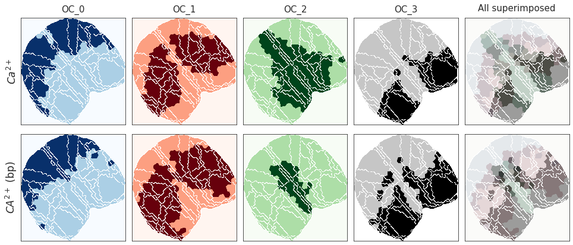
# pred membership probabilities
pi = np.concatenate([np.reshape(x, (1, -1)) for x in svinet['membership'].values()]).T
pi_bp = np.concatenate([np.reshape(x, (1, -1)) for x in svinet_bp['membership'].values()]).T
# pi_cfg = np.concatenate([np.reshape(x, (1, -1)) for x in svinet_cfg['membership'].values()]).T
# pi_cfg_bp = np.concatenate([np.reshape(x, (1, -1)) for x in svinet_cfg_bp['membership'].values()]).T
plt.figure(figsize=(13.5, 6))
plt.subplot(211)
plt.imshow(pi, aspect=12, interpolation='none')
plt.subplot(212)
plt.imshow(pi_bp, aspect=12, interpolation='none')
<matplotlib.image.AxesImage at 0x7f0f599b6fd0>
from sklearn.metrics.pairwise import cosine_similarity
cos_sim = cosine_similarity(pi, pi_bp)
print(np.round(cos_sim, decimals=1), '\n')
thres = 0.2
similarity = dict()
for true_idx in range(num_comm):
sim_vec = np.where(cos_sim[true_idx] >= thres)[0]
sim_vec = [x for _, x in sorted(zip(cos_sim[true_idx][sim_vec], sim_vec), reverse=True)]
similarity[true_idx] = list(sim_vec)
print(similarity)
[[0. 0.9 0. 0.3]
[0.2 0.1 0. 0.9]
[0.4 0.2 0.8 0.2]
[0.9 0. 0. 0.2]]
{0: [1, 3], 1: [3], 2: [2, 0], 3: [0, 3]}
mapping
{0: 1, 1: 3, 2: 2, 3: 0}
# mapping = {i: sim[0] for i, sim in similarity.items()}
# mapping = {0: 2, 1: 3, 2: 0, 3: 4, 4: 1}
# pi_pred_bp = pi_pred_bp[list(mapping.values())]
cos_sim = cosine_similarity(pi, pi_bp[list(mapping.values())])
plt.figure(figsize=(5, 4))
plt.imshow(cos_sim, vmin=0, vmax=1, cmap='hot', interpolation='none')
plt.ylabel('$Ca^{2+}$', fontsize=15)
plt.xlabel('$CA^{2+}$ (bp)', fontsize=15)
plt.title('membership value cosine similarity', fontsize=15, y=1.1)
plt.colorbar()
# plt.savefig('memship_cossim_perc{:d}_OC{:d}.pdf'.format(perc, num_comm), dpi=300, bbox_inches='tight')
plt.show()
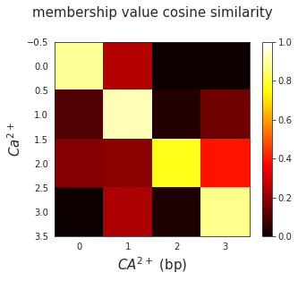
plt.figure(figsize=(13.5, 6))
plt.subplot(211)
plt.imshow(pi, aspect=12, interpolation='none')
plt.subplot(212)
plt.imshow(pi_bp[list(mapping.values())], aspect=12, interpolation='none')
plt.show()
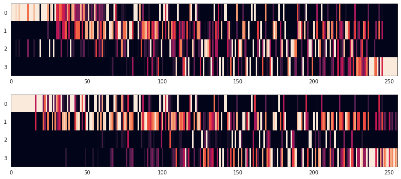
n_nodes = g.order()
dict_list = []
for i in range(num_comm):
data_dict = {
'network_name': ['ca'] * n_nodes,
'cluster': [i] * n_nodes,
'node': range(n_nodes),
'p': pi[i],
}
dict_list.append(data_dict)
data_dict = {
'network_name': ['ca_bp'] * n_nodes,
'cluster': [i] * n_nodes,
'node': range(n_nodes),
'p': pi_bp[mapping[i]],
}
dict_list.append(data_dict)
df = pd.DataFrame.from_dict(merge_dicts(dict_list))
sns.set_style('whitegrid')
ncols = num_comm
nrows = int(np.ceil(num_comm / ncols))
fig, axes = plt.subplots(nrows, ncols, figsize=(13, 2.9))#, sharex='all')
axes = axes.reshape(nrows, ncols)
bins = np.linspace(0, 1, 11)
ticklabels = [np.round(item, decimals=1) if idx%2 == 0 else '' for idx, item in enumerate(bins)]
for idx in range(nrows*ncols):
i, j = idx//ncols, idx%ncols
union = set(svinet['community'][idx]).union(set(svinet_bp['community'][mapping[idx]]))
selected_df = df.loc[(df.cluster == idx) & (df.node.isin(union))]
hist = sns.histplot(
data=selected_df,
x='p',
hue='network_name',
stat='probability',
# kde=True,
alpha=0.7,
bins=bins,
# legend=True if idx == 2 else False,
legend=True if idx == num_comm - 1 else False,
palette=['C0', 'C9'],
# line_kws={'lw': 2, 'alpha': 0.8},
ax=axes[i, j],
)
leg = hist.get_legend()
if leg is not None:
plt.setp(leg.get_texts()[0], text='$Ca^{2+}$', fontsize=12)
plt.setp(leg.get_texts()[1], text='$CA^{2+}$ (bp)', fontsize=11)
plt.setp(leg.get_title(), text='Mode', fontsize=11)
plt.setp(leg, bbox_to_anchor=(1.5, 0.77))
axes[i, j].set_title('OC-{:d}'.format(idx), fontsize=12)
axes[i, j].set_xticks(bins)
axes[i, j].set_xticklabels(ticklabels)
axes[i, j].set_xlabel('membership value', fontsize=11)
if j > 0:
axes[i, j].set_ylabel('')
fig.tight_layout()
fig.savefig('memship_hist_perc{:d}_OC{:d}.pdf'.format(perc, num_comm), dpi=300, bbox_inches='tight')
plt.show()
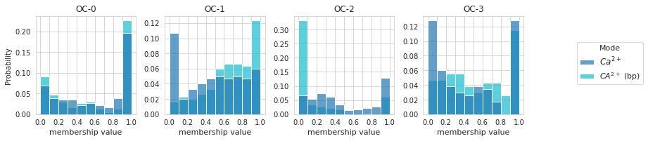
Visualize memship values on cortex¶
run = 1
regions = {}
tot_num_regions = {}
for subject in range(1, config.num_subjects+1):
for session in range(1, config.num_sessions+1):
_load = load_organized_data(
folder='atlas-allen_unfiltered_unnormalized',
config=config,
subject=subject,
session=session,
run=run,
)
if _load is None:
continue
_atlsorg = organize_atlas(_load)
key = 'sub-SLC{:02d}_ses-{:d}'.format(subject, session)
regions[key] = _atlsorg['regions']
tot_num_regions[key] = len(_atlsorg['regions'])
common_regions = list(set.intersection(*[set(reg_dict.keys()) for reg_dict in regions.values()]))
common_regions = {k: config.region_labels[k] for k in sorted(common_regions)}
common_r = [item[2:] for item in common_regions.values() if item[:2] == 'R-']
common_l = [item[2:] for item in common_regions.values() if item[:2] == 'L-']
common_global = set(common_r).intersection(common_l)
common_regions = {k: v for k, v in common_regions.items() if v[2:] in common_global}
len(common_regions)
44
Node centralities¶
from scipy import special as sp_special
ent = sp_special.entr(pi).sum(0) / np.log(num_comm)
ent_bp = sp_special.entr(pi_bp).sum(0) / np.log(num_comm)
ent_cfg = sp_special.entr(pi_cfg).sum(0) / np.log(num_comm)
ent_bp_cfg = sp_special.entr(pi_cfg_bp).sum(0) / np.log(num_comm)
selected_graphs = {'ca': g, 'bold': g_bp}
selected_graphs_cfg = {'ca': g_cfg, 'bold': g_bp_cfg}
centralities = {}
centralities_cfg = {}
for key in ['ca', 'bold']:
# real
_graph = selected_graphs[key]
degree = nx.degree_centrality(_graph)
closeness = nx.closeness_centrality(_graph, distance='weight')
betweenness = nx.betweenness_centrality(_graph, weight='weight')
eigenvector = nx.eigenvector_centrality(_graph, weight='weight')
centralities[key] = {
'degree': {k: v/max(list(degree.values())) for k, v in degree.items()},
'entropy': {i: ent[i]/max(ent) for i in range(g.order())},
'closeness': {k: v/max(list(closeness.values())) for k, v in closeness.items()},
'betweenness': {k: v/max(list(betweenness.values())) for k, v in betweenness.items()},
# 'eigenvector': {k: v/max(list(eigenvector.values())) for k, v in eigenvector.items()},
}
for comm_idx in range(num_comm):
memship_vec = pi_pred[comm_idx] if key == 'ca' else pi_pred_bp[mapping[comm_idx]]
memship_dict = {node: memship_vec[node]/max(memship_vec) for node in _graph.nodes}
centralities[key].update({'OC_{:d}_memship'.format(comm_idx): memship_dict})
# cfg
_cfg = selected_graphs_cfg[key]
degree = nx.degree_centrality(_cfg)
closeness = nx.closeness_centrality(_cfg, distance='weight')
betweenness = nx.betweenness_centrality(_cfg, weight='weight')
eigenvector = nx.eigenvector_centrality(_cfg, weight='weight')
centralities_cfg[key] = {
'degree': {k: v/max(list(degree.values())) for k, v in degree.items()},
'entropy': {i: ent_cfg[i]/max(ent_cfg) for i in range(g.order())},
'closeness': {k: v/max(list(closeness.values())) for k, v in closeness.items()},
'betweenness': {k: v/max(list(betweenness.values())) for k, v in betweenness.items()},
# 'eigenvector': {k: v/max(list(eigenvector.values())) for k, v in eigenvector.items()},
}
for comm_idx in range(num_comm):
memship_vec = pi_pred_cfg[comm_idx] if key == 'ca' else pi_pred_bp_cfg[mapping[comm_idx]]
memship_dict = {node: memship_vec[node]/max(memship_vec) for node in _cfg.nodes}
centralities_cfg[key].update({'OC_{:d}_memship'.format(comm_idx): memship_dict})
key = 'ca'
centralities_cortex = {}
for lbl, centrality_d in centralities[key].items():
x = np.ones(load['atlas_kmeans'].shape, dtype=float) * np.nan
for node, value in centrality_d.items():
region_id = node_labels[node]
x[load['atlas_kmeans'] == region_id] = value
centralities_cortex[lbl] = x
centralities_cortex_cfg = {}
for lbl, centrality_d in centralities_cfg[key].items():
x = np.ones(load['atlas_kmeans'].shape, dtype=float) * np.nan
for node, value in centrality_d.items():
region_id = node_labels[node]
x[load['atlas_kmeans'] == region_id] = value
centralities_cortex_cfg[lbl] = x
sns.set_style('white')
nrows, ncols = 2, 4
fig, axes = plt.subplots(nrows, ncols, figsize=(13.5, 6.5))
axes = axes.reshape(nrows, ncols)
for j, lbl in enumerate(centralities_cortex.keys()):
if 'memship' in lbl:
continue
for i in range(2):
x = centralities_cortex[lbl] if i == 0 else centralities_cortex_cfg[lbl]
data2plt = np.ma.masked_where(atls_org['contour'], x)
im = axes[i, j].imshow(data2plt, cmap='jet', interpolation='none')
list(map(lambda x: x.set_visible(False), axes[i, j].spines.values()))
axes[i, j].set_xticks([])
axes[i, j].set_yticks([])
if i == 0:
axes[i, j].set_title('{:s}'.format(lbl), fontsize=14, y=1.1)
if j == 0:
axes[0, j].set_ylabel('real graph\n', fontsize=13)
axes[1, j].set_ylabel('configuration model\n', fontsize=13)
# msg = 'Node centralities, top row: real graph, bottom row: configuration model'
#fig.suptitle(msg, fontsize=15, y=0.98)
pos0 = axes[0, -1].get_position()
pos1 = axes[-1, -1].get_position()
rect = [
pos1.x0 + 1.2 * pos1.width, # left
pos1.y0, # bottom
pos1.width / 17, # width
pos0.y0 - pos1.y0 + pos1.height, # height
]
cax = fig.add_axes(rect)
fig.colorbar(cm.ScalarMappable(cmap='jet'), cax=cax, orientation="vertical")
fig.savefig('centralities_cortex_perc{:d}_OC{:d}.pdf'.format(perc, num_comm), dpi=300, bbox_inches='tight')
plt.show()
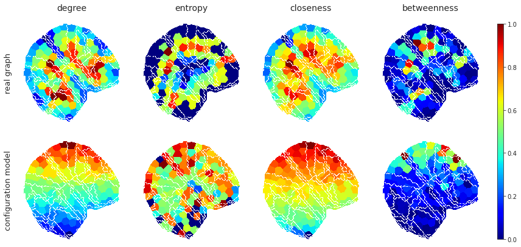
sns.set_style('white')
nrows, ncols = 2, 4
fig, axes = plt.subplots(nrows, ncols, figsize=(13.5, 6.5))
axes = axes.reshape(nrows, ncols)
for j, lbl in enumerate(centralities_cortex.keys()):
if 'memship' not in lbl:
continue
j -= 4
for i in range(2):
x = centralities_cortex[lbl].copy() if i == 0 else centralities_cortex_cfg[lbl].copy()
x[x < 0.01] = 0
data2plt = np.ma.masked_where(atls_org['contour'], x)
im = axes[i, j].imshow(data2plt, cmap='jet', interpolation='none')
# plt.colorbar(mappable=im, ax=axes[i, j], aspect=40, shrink=0.5)
list(map(lambda x: x.set_visible(False), axes[i, j].spines.values()))
axes[i, j].set_xticks([])
axes[i, j].set_yticks([])
if i == 0:
axes[i, j].set_title('{:s}'.format(lbl), fontsize=14, y=1.1)
if j == 0:
axes[0, j].set_ylabel('real graph\n', fontsize=13)
axes[1, j].set_ylabel('configuration model\n', fontsize=13)
# msg = 'Node centralities, top row: real graph, bottom row: configuration model'
# fig.suptitle(msg, fontsize=15, y=0.98)
# fig.tight_layout()
pos0 = axes[0, -1].get_position()
pos1 = axes[-1, -1].get_position()
rect = [
pos1.x0 + 1.2 * pos1.width, # left
pos1.y0, # bottom
pos1.width / 17, # width
pos0.y0 - pos1.y0 + pos1.height, # height
]
cax = fig.add_axes(rect)
fig.colorbar(cm.ScalarMappable(cmap='jet'), cax=cax, orientation="vertical")
fig.savefig('memships_cortex_perc{:d}_OC{:d}.pdf'.format(perc, num_comm), dpi=300, bbox_inches='tight')
plt.show()
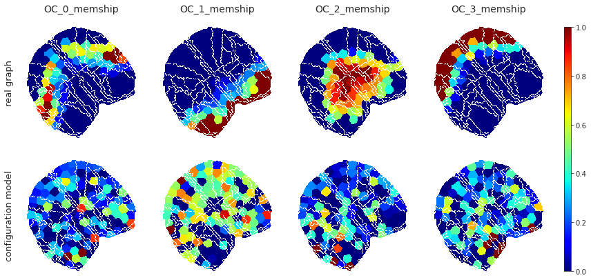
key = 'ca'
_lbls = {
'degree': 'C0',
'closeness': 'C3',
'betweenness': 'C4',
# 'eigenvector': 'C5',
}
sns.set_style('white')
nrows, ncols = 2, 3
fig, axes = plt.subplots(nrows, ncols, figsize=(9.5, 7), sharey='row', sharex='col')
axes = axes.reshape(nrows, ncols)
for j, lbl in enumerate(_lbls):
x = list(centralities[key][lbl].values())
for i in range(2):
if i == 0:
y = list(centralities[key]['entropy'].values())
else:
y = list(centralities_cfg[key]['entropy'].values())
sns.regplot(
x=x,
y=y,
color=_lbls[lbl],
label=lbl,
x_ci='sd',
line_kws={'lw': 2},
scatter_kws={'alpha': 0.5, 's': 20,},
ax=axes[i, j],
)
axes[i, j].set_ylim(0, 1.2)
if i == 0:
axes[i, j].legend(loc='upper left')
else:
axes[i, j].set_xlabel(lbl, fontsize=13)
if j == 0:
axes[0, j].set_ylabel('entropy (real)', fontsize=13)
axes[1, j].set_ylabel('entropy (config)', fontsize=13)
fig.tight_layout()
fig.savefig('centralities_regscatter_perc{:d}_OC{:d}.pdf'.format(perc, num_comm), dpi=300, bbox_inches='tight')
plt.show()
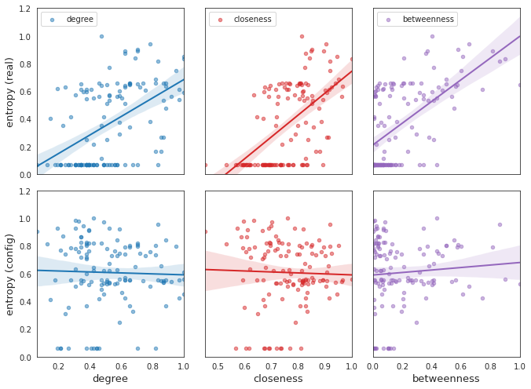